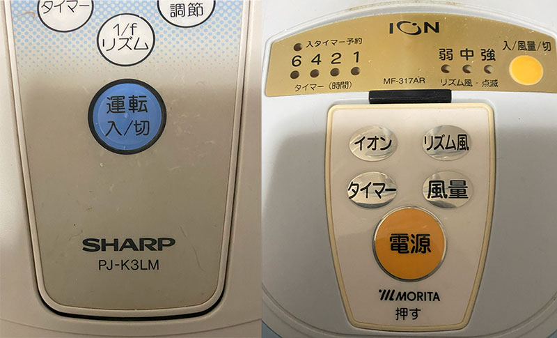
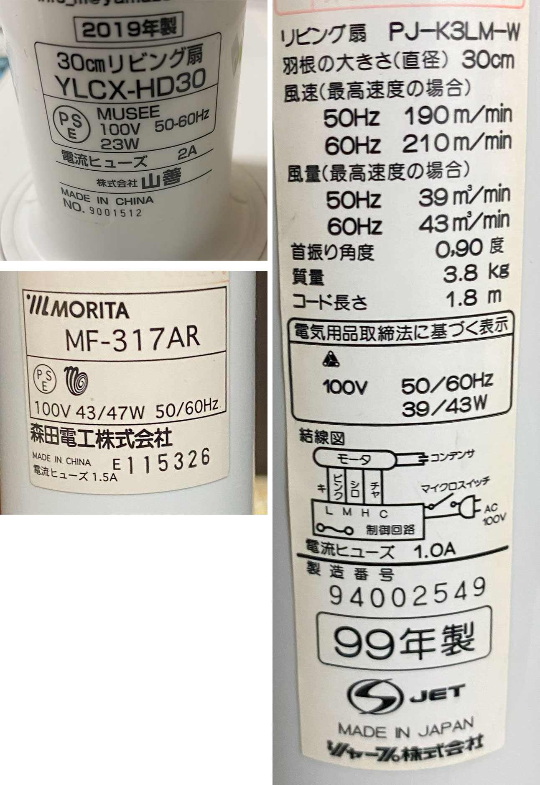
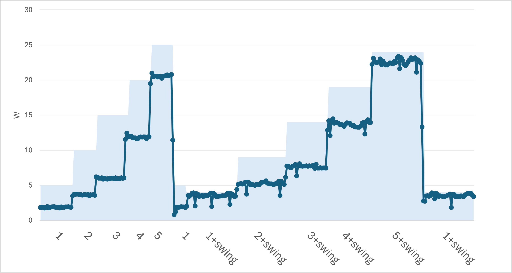
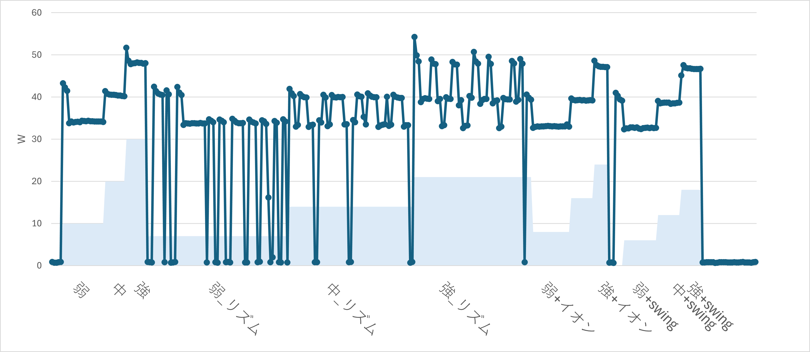
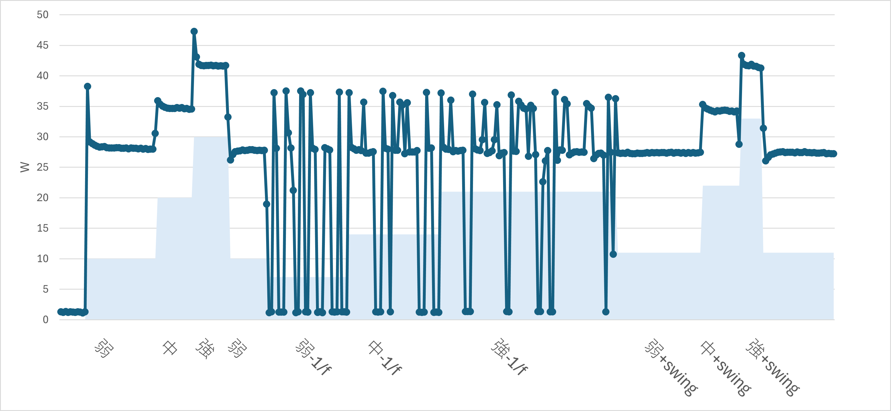
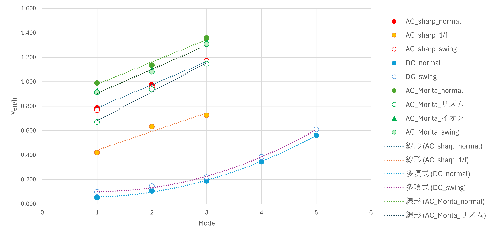

扇風機-電力消費量
今年の夏は暑いです．エアコンも使いたいですが，電気代が．．．ということで扇風機の電力消費量を確認しました．
まずは，単位のおさらいから
W ： 電力を表し，電気が1秒間にする仕事です
Wh ： １Wの電力を1時間使った時の電力量です．
1 kWh = 1000 Wh
です．一応
28 円/kWh
で計算しています．
消費電力は，Bluetoothワットチェッカー，を使っています，前のタイプはツイッターに挙げるタイプでしたが，これはスマホでリアルタイムに記録できる製品です（後継機種が出ていますが）
今回確認した扇風機は，
DC : ヤマゼン YAMAZEN YLCX-HD30-WS [DCリビング扇風機] 販売終了時の価格： ￥9,420（税込） 23W
AC : Morita MF-317AR 43/47W
AC : Sharp PJ-K3LM-W (1999) 39/43W


と一番古いのはシャープでもう四半世紀使っていますが現役です．個人的にはシャープの扇風機の風が一番好きです．しかもMoritaよりも消費電力が少ない．
・消費電力比較
まずは，DCの山善

5段階の速度調節があり，首振り機能も付いています．
| Mode | W | 円/h | |
| normal | 1 | 1.87 | 0.052 |
| 2 | 3.81 | 0.107 | |
| 3 | 6.77 | 0.190 | |
| 4 | 12.31 | 0.345 | |
| 5 | 20.02 | 0.561 | |
| swing | 1 | 3.48 | 0.097 |
| 2 | 5.19 | 0.145 | |
| 3 | 7.82 | 0.219 | |
| 4 | 13.68 | 0.383 | |
| 5 | 21.80 | 0.610 |
結果を見ると，1から５のモードが比例しているわけではないようです（風力をチェックしていないので電力そのものが風力に比例しているかはわかりませんが）．
面白いことに首振りすると電力消費が上がること．DC扇風機は別の制御で首振りしているのですね．AC扇風機はモーターの回転の一部を首振りにしていたはずです．
また，首振りの両端で電力がちょっと落ちていることがわかります．
商品のスペックは，モード５の首振りという最大値を示しているようです．
次は，ACのMorita

弱，中，強，という3段階，それにリズム，イオン（謎）があります．
なぜか，スタート，モードの変更をすると最初高めの電力が必要となり，その後安定します．弱，中，強と直線関係にありそうです．
リズムは，
弱リズム：０と弱
中リズム：０と弱と中
強リズム：弱と中と強
を行き来するようです，周期的でなくランダムの様子（1/f？）
首振りは予想したように，首振りしないときに比べて電力に差はありませんでした（ファンの回転数に関してはわかりません）
消費電力は，
| Mode | W | 円/h | |
| normal | 弱 | 35.40 | 0.991 |
| 中 | 40.56 | 1.136 | |
| 強 | 48.47 | 1.357 | |
| リズム | 弱 | 23.95 | 0.671 |
| 中 | 33.51 | 0.938 | |
| 強 | 40.95 | 1.147 | |
| イオン | 弱 | 33.05 | 0.925 |
| 中 | 39.27 | 1.100 | |
| 強 | 47.44 | 1.328 | |
| 首振り | 弱 | 32.65 | 0.914 |
| 中 | 38.65 | 1.082 | |
| 強 | 46.67 | 1.307 |
やはり，DCに比べて明らかに消費電力が高いです．
次はACシャープ

これも，弱，中，強，という3段階，それに1/f（ピンクノイズ？）があります．
1/f ゆらぎ，一時はやりましたが，最近聞かないですね．．．
ぜか，スタート，モードの変更をすると最初高めの電力が必要となり，その後安定します．弱，中，強と直線関係にありそうです．
リズムは，
０と弱と中
を行き来するようです，弱中強でその頻度が変わるようです．周期的でなくランダムの様子でしょうか？でも計測時間が短いので周波数解析，自己相関解析ができませんでした．
首振りは予想したように，首振りしないときに比べて電力に差はありませんでした（ファンの回転数に関してはわかりません）
消費電力は，
| Mode | W | 円/h | |
| AC_sharp_normal | 弱 | 28.10 | 0.787 |
| 中 | 34.83 | 0.975 | |
| 強 | 41.59 | 1.165 | |
| AC_sharp_1/f | 弱 | 15.00 | 0.420 |
| 中 | 22.59 | 0.633 | |
| 強 | 25.89 | 0.725 | |
| AC_sharp_swing | 弱 | 27.40 | 0.767 |
| 中 | 34.03 | 0.953 | |
| 強 | 41.80 | 1.170 |
とMoritaに比べて低い値となっています．25年選手なのに優秀です．
モードと金額
3つの扇風機のモードと金額をグラフ化してみました．
各製品の強さは必ずしも同一の風量でないので，直接的な比較にはなりませんが，参考まで．

これを見ても明らかなように，DCモーターの金額の低さが際立っています．二次曲線なのが不思議．
首振りにすると若干上がりますが，まあそれほど大きくはないでしょう．
ACモーターはシャープという25年選手の検討が際立っています．
Moritaはなぜか首振りの場合に金額が若干下がっています．．．
ただ，ACモーターもリズム，1/f，にするとだいぶ金額が下がります．まあ間欠運転なので当然ですが．．．
DCモーターは元を取れるか？
実際に，高めの値段のDC扇風機を購入して元が取れるかをシミュレートしてみました．
1日：4時間
1年：4か月
で計算してみました．
金額 （円/1時間） |
1日当たり の時間 |
月の費用 （円） |
年間4か月使用した場合 | DC_swingとの差額 （月） |
DC_swingとの差額 （4か月） |
||
| DC | 0.05 | 4 | 6.51 | 26.03 | |||
| DC_swing | 0.10 | 4 | 12.09 | 48.35 | |||
| AC_Sharp | 0.79 | 4 | 97.55 | 390.20 | |||
| AC_Sharp_1/f | 0.42 | 4 | 52.07 | 208.29 | 39.99 | 159.94 | |
| AC_morita | 0.99 | 4 | 122.90 | 491.60 | |||
| AC_morita_リズム | 0.67 | 4 | 83.17 | 332.67 | 71.08 | 284.32 |
この程度の使用頻度でしたら，年間150～300円，となると，あえてDCを選ぶ必要性はないのかも．．．．
それより，静粛性，方向（サーキュレーターのように使いたい），で選んだ方がいいのかも．
今回使用したDCモーターも首振りすると，コクコク，音がして寝室では使いづらい．．．（もう古いのかもしれませんが．．）